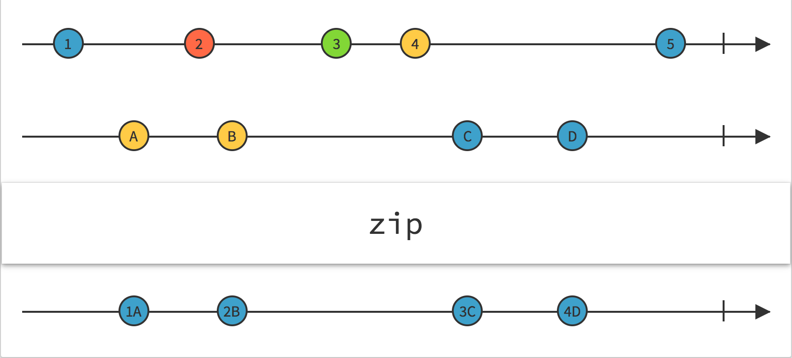

zip
参数列表：
-
observables
... Observable
要zip的一个或者多个observable
-
project
function(val1,val2,...):T
(可选),处理值的函数，他的参数是每一个Source在当前序号上emit的值。返回值会当做zip的返回。默认为[v1,v2,v3]
返回值: Observable <T>
珠宝图:

功能说明:
- zip 订阅多个Source,并且记录他们每个位置上的发射值的顺序，从1开始，当所有Source都在该序号上发射了值，zip才向外输出
- zip complete的条件：如果一个source没有emit任何值就直接complete.或者某个source发射了complete,且当前zip发射的序号和这个source最后一次发射的相等
- zip error的条件：任何一个source发射了error
备注事项:
- 切忌把emit频率相差太大的多个source进行zip,这样可能会浪费很多内存，因为zip会缓存发射较快的source的值
点击不同按钮查看不同demo 代码效果